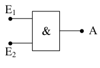
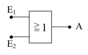
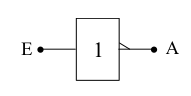
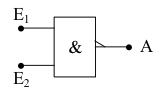
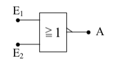
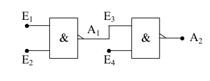
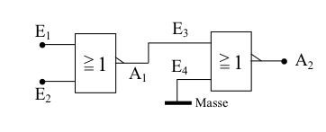
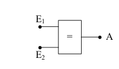
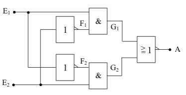

Einführung
Logische Verknüpfungsschaltungen sind das Grundgerüst der digitalen Technik. Mit Hilfe der 5 hier aufgeführten Verknüpfungsschaltungen, die auch Gatter genannt werden, lassen sich nun alle anderen Verknüpfungsschaltungen realisieren.
Die Wahrheitstabelle, oder auch Logik-Tafel, die bei jeder Verknüpfungsschaltung mit aufgeführt wird, gibt an, welches Signal am Ausgang anliegt, nachdem die Eingänge in einer bestimmten Weise angeschlossen wurden. Dabei werden alle möglichen Anschlusskombinationen durchgespielt.
AND-Gatter
Die Boolesche Funktionsgleichung (mathematische Gleichung) für das AND-Gatter lautet:
A = E1 ∧ E2 (sprich: “E1 und E2“)
Das bedeutet, dass nur dann den Wert 1 hat, wenn die Eingänge
E1 und E2 den Wert 1 haben.
In allen anderen Fällen hat der Ausgang A den Wert 0. Anhand
der Logik-Tafel ist dies leicht zu erkennen. In der Zeile, in der A
den Wert 1 hat, haben die beiden Eingänge ebenfalls den Wert 1.
Logiktabelle
| E1 | E2 | A |
|---|---|---|
| 0 | 0 | 0 |
| 0 | 1 | 0 |
| 1 | 0 | 0 |
| 1 | 1 | 1 |
Symbol

Hier ist die einfachste UND-Verknüpfung gewählt worden, nämlich die
mit 2 Eingängen. Tatsächlich gibt es jedoch auch AND-Gatter mit mehr
als zwei Eingängen. Die mathematische Logik bleibt dabei aber
gleich:
Nur wenn alle Eingänge den Wert 1 haben, hat der Ausgang
ebenfalls den Wert 1.
Die UND-Verknüpfung wird auch als Konjunktion bezeichnet, was so viel heißt wie Bindung.
OR-Gatter
Hier heißt die mathematischer Gleichung:
A = E1 ∨ E2 (sprich: “E1 oder E2“)
Dabei hat A dann den Wert 1, wenn E1 oder E2 oder beide (!) Eingänge den Wert 1 haben.
Dieses Verhalten unterscheidet sich von dem normalen Sprachgebrauch des Wortes oder. Hier bedeutet es: A hat nur dann den Wert 0, wenn beide Eingänge den Wert 0 haben. Sonst hat der Ausgang den Wert 1.
Logiktabelle
| E1 | E2 | A |
|---|---|---|
| 0 | 0 | 0 |
| 0 | 1 | 1 |
| 1 | 0 | 1 |
| 1 | 1 | 1 |
Symbol

Die ODER-Verknüpfung gibt es ebenfalls mit mehr als zwei Eingängen, wobei sich die mathematischer Logik wie beim AND-Gatter nicht ändert. Eine andere Bezeichnung für das OR-Gatter ist die Disjunktion, das heißt Trennung.
Inverter
Das Schaltsymbol des Inverters ist unten abgebildet. Dabei lässt sich die mathematische Logik durch folgende Gleichung darstellen:
A = ¬E (sprich “E komplementär“ oder “E negiert“).
Logiktabelle
| E1 | A |
|---|---|
| 0 | 1 |
| 1 | 0 |
Symbol

Ein anderer Begriff für den Inverter ist die Negation. Indem man nun das AND-Gatter und das OR-Gatter negiert, erhält man zwei weitere wichtige Verknüpfungsschaltungen.
NAND-Gatter
Gebildet aus den englischen Worten not and, also nicht und. Daraus lässt sich bereits schließen, dass die Verknüpfung negiert sein muss. Die mathematische Gleichung bestätigt dies:
A = ¬(E1 ∧ E2) (sprich: “E1 und E2 negiert“)
Der Ausgang A hat immer den Wert 1, außer wenn beide Eingänge den Wert 1 haben. Anhand der Logik-Tafel lässt sich auch erkennen, dass die NAND-Funktion an ihrem Ausgang genau das entgegengesetzte Signal hat wie das AND-Gatter.
Logiktabelle
| E1 | E2 | A |
|---|---|---|
| 0 | 0 | 1 |
| 0 | 1 | 1 |
| 1 | 0 | 1 |
| 1 | 1 | 0 |
Symbol

NOR-Gatter
Gebildet aus den englischen Wörtern not or, was übersetzt nicht oder heißt. Es handelt sich also wiederum um eine Negation, nämlich die der OR-Verknüpfung. Die mathematische Gleichung lautet:
A = ¬(E1 ∨ E2) (sprich: “E1 oder E2 negiert“)
Bei dieser Verknüpfungsschaltung hat der Ausgang A den Wert 1, wenn beide Eingänge den Wert 0 haben. In allen anderen Fällen hat der Ausgang den Wert 0.
Logiktabelle
| E1 | E2 | A |
|---|---|---|
| 0 | 0 | 1 |
| 0 | 1 | 0 |
| 1 | 0 | 0 |
| 1 | 1 | 0 |
Symbol

Da diese beiden letzten Gatter sehr häufig vorkommen, haben sie ein eigenes Schaltsymbol. Außerdem sind sie für den Praktiker sehr interessant, da sie gegenüber den UND- bzw. ODER-Gattern meist erheblich billiger sind. Deshalb nimmt man häufig zwei NAND-Gatter um ein UND-Gatter billig aufzubauen, oder zwei NOR-Gatter für ein OR-Gatter. Die dafür notwendigen Schaltungen werden im Folgenden erklärt.

Bei dieser Schaltung hat der Ausgang A1 nur dann den Wert 0, wenn beide Eingänge, also E1 und E2 den Wert 1 haben. Der offene (nicht angeschlossene) Eingang E4 hat generell den Wert 1. Um aber am Ausgang A2 den Wert 1 zu erreichen, muss deswegen E3 und somit am Ausgang A1 der Wert 0 anliegen. Dies wird, wie oben schon beschrieben, nur dadurch erreicht, dass man den Eingängen E1 und E2 den Wert 1 zuordnet.
Mathematisch ausgedrückt bedeutet dies:
A1 = ¬(E1 ∧ E2)
A2 = ¬A1 = ¬(¬(E1 ∧ E2))
¬(¬(E1 ∧ E2)) ist aber nichts anderes als E1 ∧ E2; somit gilt die Funktionsgleichung der normalen UND-Verknüpfung:
A2 = E1 ∧ E2
Dies beweist, dass die obige Schaltung einer normalen UND-Verknüpfung entspricht.

Die Logik dieser Schaltung ist ähnlich der Vorherigen. Der Ausgang A2 hat nur dann den Wert 0, wenn E3 den Wert 1 hat. E4 ist durch den Masseanschluss sowieso immer auf 0. Der Wert 1 an E3 und somit an A1 wird aber nur erreicht, indem man E1 und E2 den Wert 0 zuordnet. In allen anderen Fällen hat A1 den Wert 0 und damit A2 den Wert 1. Dies wiederum entspricht genau der OR-Verknüpfung.
Hier der mathematische Beweis:
A1 = ¬(E1 ∨ E2)
A2 = ¬A1 = ¬(¬(E1 ∨ E2)) = E1 ∨ E2
Mit diesen nun beschriebenen 5 Grundschaltungen (AND-, NAND-, OR-, NOR-Gatter und Inverter) lassen sich alle anderen logischen Verknüpfungsschaltungen realisieren.
Man muss nur die gewünschten Elemente zusammenschalten. Den mathematischen Hintergrund für die Kombination der Gatter liefert die Boolesche Algebra. Die Grundfunktionen sind bei der Erklärung der Schaltungen mit angegeben.
EX-OR-Gatter (Exklusiv-ODER)
Eine Variation der Zusammenschaltung der 5 Grundgatter ist das Exklusiv-ODER. Im Gegensatz zur ODER-Verknüpfung tritt am Ausgang nicht der Wert 1 auf, wenn beide Eingänge den Wert 1 haben. Diese Funktion entspricht jetzt dem oder wie es im normalen Sprachgebrauch verwendet wird. Das heißt, dass am Ausgang der Wert 1 vorliegt, wenn entwedder E1 oder E2 den Wert 1 haben. Sobald E1 und E2 den gleichen Wert haben, liegt am Ausgang A der Wert 0.
Logiktabelle
| E1 | E2 | A |
|---|---|---|
| 0 | 0 | 0 |
| 0 | 1 | 1 |
| 1 | 0 | 1 |
| 1 | 1 | 0 |
Symbol
Da diese Verknüpfungsschaltung sehr häufig vorkommt, hat auch sie ihr eigenes Schaltsymbol. Sie kann aber auch durch die Zusammenschaltung von 2 Invertern, 2 AND-Gattern und einem NOR-Gatter aufgebaut werden. Die mathematische Funktion lautet:
A = (¬E1 ∧ E2) ∨ (E1 ∧ ¬E2
Nun zum Schaltbild des Exklusiv-ODER. Ein Praktiker kann schon anhand der mathematischen Gleichung das Schaltbild zeichnen. Man muss dabei nur genau die Gleichung in die Schaltsymbole der logischen Verknüpfung umwandeln.

Bei dieser Schaltung wollen wir nun einmal einen anderen Weg gehen, der sich vor allem bei komplexen und komplizierteren Schaltungen als sehr einfach herausstellt. Dabei wird an die beiden Eingänge E1 und E2 jede mögliche Eingangskombination gelegt und bis zum Ausgang A durchgespielt. Im vorliegenden Fall sind das genau 4 Kombinationen.
-
An E1 und E2 liegt jeweils der Wert 0. Das obere AND-Gatter hat also am Eingang den Wert 0 von E1 und den Wert 1 vom invertierten E2. Das ergibt einen Zwischenwert G1 = 0. Das untere AND-Gatter hat ebenfalls den Wert 0 (von E2) und den Wert 1 (invertiertes E1) und somit ebenfalls den Zwischenwert G2 = 0. Diese beiden Zwischenwerte liegen nun an einem OR-GATTER, das dadurch am Ausgang den Wert 0 hat. Damit ist die erste Zeile der Logik-Tafel schon festgelegt.
-
Nun legt man an E1 den Wert 0 und an E2 den Wert 1. Da E2 invertiert an das obere AND-Gatter gelangt und E1 von vorneherein 0 ist, erscheint am oberen Zwischenausgang G1 der Wert 0. Beim unteren AND-Gatter sind dagegen beide Eingänge auf dem Wert 1, da E1 invertiert wird und E2 den Wert 1 hat. Das ergibt am Zwischenausgang G2 den Wert 1. Am OR-Gatter liegt also nun einmal der Wert 0 (G1) und einmal der Wert 1 (G2). Der Ausgang A hat somit den Wert 1.
-
Wenn man nun an den Eingang E1 den Wert 1 und an E2 den Wert 0 legt, so läuft die Logik genau den gleichen Weg. Nur liegen dabei die Werte die vorher am oberen AND-Gatter lagen nun am unteren und umgekehrt. Am Ausgang erscheint deshalb wie unter 2. der Wert.
-
Die letzte Kombinationsmöglichkeit ist nun die, dass beide Eingänge E1 und E2 den Wert 1 bekommen. Durch die Invertierung von E2 am oberen und E1 am unteren AND-Gatter haben die Zwischenausgänge G1 und G2 die gleichen Werte, nämlich 0. Eine Parallele dazu ist die erste Kombination. Am Ausgang A erscheint deshalb der Wert 0.
EX-NOR-Gatter
Eine Variation des EX-OR-Gatters ist diese Schaltung. Dabei wird nur der Ausgang A der oberen Schaltung invertiert.
Logiktabelle
| E1 | E2 | A |
|---|---|---|
| 0 | 0 | 1 |
| 0 | 1 | 0 |
| 1 | 0 | 0 |
| 1 | 1 | 1 |
Symbol

Schaltung
